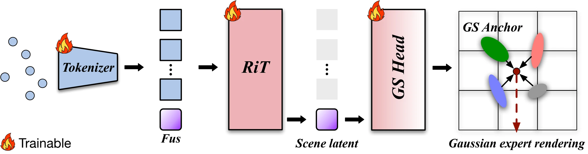
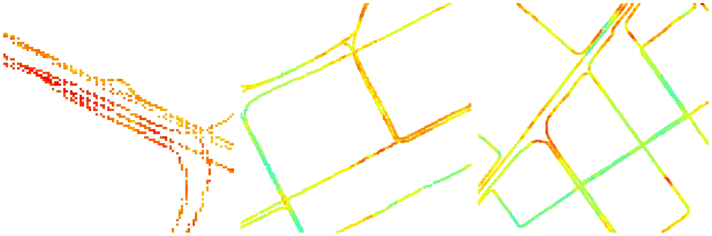

GenRFReconstruct Any Radio Field
in a Feed-Forward Process
Overview
GenRF reconstructs a continuous radio field from sparse measurements in a single forward pass. It learns reconstruction priors across scenes, allowing a shared model to work in new environments without scene-specific optimization. A Radio Transformer encodes the observations, and a Gaussian Scene Head predicts the expert attributes used to reconstruct the field.

GenRF Dataset
The dataset contains 121,363 measured radio-field scenes from Shenzhen, China, at three spatial scales. Each scene stores RSRP measurements on an approximately one-meter grid, supporting sparse observation–target preparation for cross-scene learning and evaluation.
- 121,363
- measured scenes
- 3
- spatial scales
- ~1 m
- grid spacing
- n41
- 5G NR band

Citation
If you use GenRF or its dataset in your research, please cite our work.
@inproceedings{genrf-sensys,
title = {{GenRF}: Reconstruct Any Radio Field in a Feed-Forward Process},
author = {Shen Wang and Guosheng Wang and Junyang Liu and Lei Yang},
booktitle = {ACM SenSys},
month = may,
year = {2027}
}